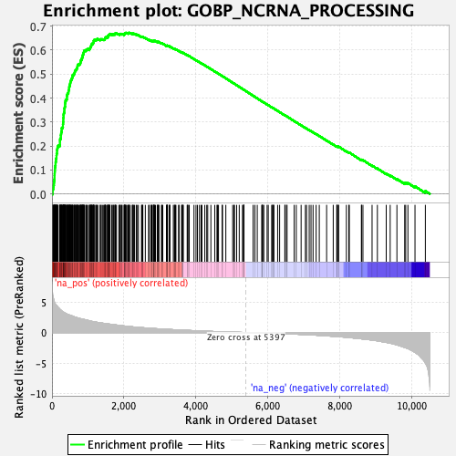
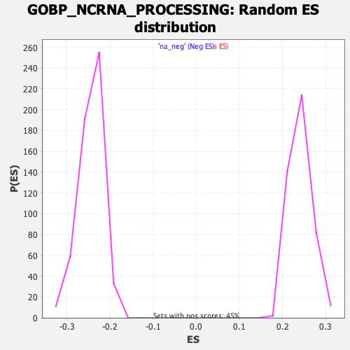

| Dataset | qlf.KOd4vsWTd4_gsea_score |
| Phenotype | NoPhenotypeAvailable |
| Upregulated in class | na_pos |
| GeneSet | GOBP_NCRNA_PROCESSING |
| Enrichment Score (ES) | 0.6725296 |
| Normalized Enrichment Score (NES) | 2.7806582 |
| Nominal p-value | 0.0 |
| FDR q-value | 0.0 |
| FWER p-Value | 0.0 |

| SYMBOL | RANK IN GENE LIST | RANK METRIC SCORE | RUNNING ES | CORE ENRICHMENT | |
|---|---|---|---|---|---|
| 1 | NHP2 | 20 | 6.137 | 0.0085 | Yes |
| 2 | RPF2 | 22 | 6.088 | 0.0189 | Yes |
| 3 | PPAN | 35 | 5.748 | 0.0275 | Yes |
| 4 | PUS1 | 44 | 5.471 | 0.0361 | Yes |
| 5 | WDR43 | 54 | 5.387 | 0.0445 | Yes |
| 6 | RSL1D1 | 58 | 5.337 | 0.0533 | Yes |
| 7 | METTL1 | 65 | 5.025 | 0.0613 | Yes |
| 8 | LYAR | 70 | 4.970 | 0.0694 | Yes |
| 9 | RPL7A | 71 | 4.969 | 0.0780 | Yes |
| 10 | MRTO4 | 74 | 4.911 | 0.0862 | Yes |
| 11 | NOP56 | 78 | 4.856 | 0.0942 | Yes |
| 12 | RPL5 | 82 | 4.819 | 0.1022 | Yes |
| 13 | NOP58 | 84 | 4.801 | 0.1103 | Yes |
| 14 | NOP2 | 91 | 4.713 | 0.1178 | Yes |
| 15 | FBL | 99 | 4.608 | 0.1250 | Yes |
| 16 | WDR74 | 101 | 4.591 | 0.1327 | Yes |
| 17 | RCL1 | 110 | 4.509 | 0.1397 | Yes |
| 18 | DKC1 | 112 | 4.505 | 0.1473 | Yes |
| 19 | FTSJ3 | 124 | 4.436 | 0.1538 | Yes |
| 20 | PUS7 | 126 | 4.428 | 0.1613 | Yes |
| 21 | RRP9 | 130 | 4.393 | 0.1685 | Yes |
| 22 | NOLC1 | 141 | 4.301 | 0.1749 | Yes |
| 23 | DDX56 | 142 | 4.300 | 0.1823 | Yes |
| 24 | TRMT61A | 148 | 4.282 | 0.1891 | Yes |
| 25 | BYSL | 156 | 4.245 | 0.1957 | Yes |
| 26 | DDX18 | 170 | 4.117 | 0.2015 | Yes |
| 27 | GTPBP4 | 213 | 3.880 | 0.2040 | Yes |
| 28 | RRP1B | 220 | 3.809 | 0.2099 | Yes |
| 29 | METTL16 | 221 | 3.786 | 0.2164 | Yes |
| 30 | BRIX1 | 222 | 3.785 | 0.2229 | Yes |
| 31 | NSUN2 | 226 | 3.772 | 0.2290 | Yes |
| 32 | DIMT1 | 243 | 3.690 | 0.2338 | Yes |
| 33 | WDR4 | 246 | 3.672 | 0.2399 | Yes |
| 34 | RRP15 | 247 | 3.667 | 0.2462 | Yes |
| 35 | PA2G4 | 254 | 3.623 | 0.2518 | Yes |
| 36 | IMP4 | 258 | 3.576 | 0.2576 | Yes |
| 37 | NOB1 | 267 | 3.545 | 0.2629 | Yes |
| 38 | MPHOSPH10 | 269 | 3.536 | 0.2689 | Yes |
| 39 | RPP14 | 270 | 3.533 | 0.2749 | Yes |
| 40 | TSR2 | 294 | 3.446 | 0.2785 | Yes |
| 41 | WDR18 | 304 | 3.396 | 0.2835 | Yes |
| 42 | RPL7L1 | 305 | 3.392 | 0.2893 | Yes |
| 43 | ZNHIT3 | 309 | 3.379 | 0.2948 | Yes |
| 44 | THUMPD1 | 312 | 3.367 | 0.3003 | Yes |
| 45 | POP1 | 315 | 3.354 | 0.3059 | Yes |
| 46 | TRMT6 | 316 | 3.352 | 0.3116 | Yes |
| 47 | ZNHIT6 | 317 | 3.351 | 0.3174 | Yes |
| 48 | DDX27 | 321 | 3.340 | 0.3228 | Yes |
| 49 | MPHOSPH6 | 322 | 3.336 | 0.3285 | Yes |
| 50 | URB1 | 325 | 3.318 | 0.3340 | Yes |
| 51 | WDR75 | 334 | 3.293 | 0.3389 | Yes |
| 52 | PUSL1 | 342 | 3.275 | 0.3438 | Yes |
| 53 | EXOSC7 | 344 | 3.257 | 0.3493 | Yes |
| 54 | NIFK | 345 | 3.253 | 0.3548 | Yes |
| 55 | WDR36 | 350 | 3.238 | 0.3600 | Yes |
| 56 | NOC4L | 359 | 3.213 | 0.3647 | Yes |
| 57 | NAF1 | 365 | 3.202 | 0.3697 | Yes |
| 58 | UTP15 | 366 | 3.201 | 0.3752 | Yes |
| 59 | EXOSC2 | 368 | 3.180 | 0.3805 | Yes |
| 60 | GAR1 | 374 | 3.170 | 0.3855 | Yes |
| 61 | TRMT5 | 377 | 3.157 | 0.3907 | Yes |
| 62 | LAS1L | 398 | 3.082 | 0.3940 | Yes |
| 63 | DUS1L | 414 | 3.033 | 0.3977 | Yes |
| 64 | ELP3 | 415 | 3.032 | 0.4029 | Yes |
| 65 | RPP30 | 416 | 3.028 | 0.4081 | Yes |
| 66 | RPL14 | 422 | 3.014 | 0.4128 | Yes |
| 67 | EBNA1BP2 | 428 | 3.003 | 0.4174 | Yes |
| 68 | DIS3 | 442 | 2.955 | 0.4212 | Yes |
| 69 | TBL3 | 457 | 2.929 | 0.4248 | Yes |
| 70 | DDX21 | 460 | 2.927 | 0.4296 | Yes |
| 71 | TSR1 | 466 | 2.916 | 0.4341 | Yes |
| 72 | PES1 | 477 | 2.894 | 0.4381 | Yes |
| 73 | BOP1 | 478 | 2.892 | 0.4431 | Yes |
| 74 | PWP2 | 480 | 2.887 | 0.4479 | Yes |
| 75 | RPP38 | 491 | 2.850 | 0.4518 | Yes |
| 76 | ELAC2 | 498 | 2.841 | 0.4561 | Yes |
| 77 | GEMIN4 | 504 | 2.830 | 0.4605 | Yes |
| 78 | RPS6 | 510 | 2.817 | 0.4648 | Yes |
| 79 | WDR46 | 514 | 2.812 | 0.4693 | Yes |
| 80 | DPH3 | 523 | 2.801 | 0.4733 | Yes |
| 81 | NOL11 | 537 | 2.779 | 0.4768 | Yes |
| 82 | TRMT11 | 545 | 2.766 | 0.4808 | Yes |
| 83 | MRPL1 | 559 | 2.713 | 0.4842 | Yes |
| 84 | UTP18 | 567 | 2.696 | 0.4881 | Yes |
| 85 | UTP20 | 572 | 2.682 | 0.4923 | Yes |
| 86 | TSEN2 | 576 | 2.674 | 0.4966 | Yes |
| 87 | TRMT1 | 602 | 2.620 | 0.4987 | Yes |
| 88 | DCAF13 | 616 | 2.575 | 0.5018 | Yes |
| 89 | NOL10 | 628 | 2.546 | 0.5051 | Yes |
| 90 | RPS8 | 634 | 2.532 | 0.5089 | Yes |
| 91 | NAT10 | 637 | 2.531 | 0.5131 | Yes |
| 92 | NOL8 | 654 | 2.504 | 0.5158 | Yes |
| 93 | ELP5 | 669 | 2.476 | 0.5186 | Yes |
| 94 | TRMT10A | 686 | 2.444 | 0.5213 | Yes |
| 95 | RPPH1 | 692 | 2.440 | 0.5249 | Yes |
| 96 | RPL7 | 704 | 2.420 | 0.5280 | Yes |
| 97 | WDR55 | 709 | 2.410 | 0.5317 | Yes |
| 98 | RRP7A | 710 | 2.401 | 0.5358 | Yes |
| 99 | MDN1 | 718 | 2.381 | 0.5392 | Yes |
| 100 | INTS2 | 746 | 2.335 | 0.5406 | Yes |
| 101 | POLR3K | 767 | 2.299 | 0.5426 | Yes |
| 102 | YTHDF2 | 784 | 2.276 | 0.5449 | Yes |
| 103 | NPM3 | 791 | 2.267 | 0.5482 | Yes |
| 104 | METTL5 | 794 | 2.265 | 0.5519 | Yes |
| 105 | RPL35A | 800 | 2.259 | 0.5552 | Yes |
| 106 | EXOSC1 | 805 | 2.250 | 0.5587 | Yes |
| 107 | DUS4L | 823 | 2.227 | 0.5608 | Yes |
| 108 | RTCB | 831 | 2.219 | 0.5640 | Yes |
| 109 | EIF6 | 834 | 2.215 | 0.5676 | Yes |
| 110 | KRR1 | 847 | 2.198 | 0.5701 | Yes |
| 111 | QTRT1 | 848 | 2.198 | 0.5739 | Yes |
| 112 | SSB | 856 | 2.190 | 0.5770 | Yes |
| 113 | DDX3X | 857 | 2.190 | 0.5807 | Yes |
| 114 | DDX1 | 870 | 2.169 | 0.5833 | Yes |
| 115 | EXOSC4 | 871 | 2.169 | 0.5870 | Yes |
| 116 | RPL27 | 882 | 2.152 | 0.5897 | Yes |
| 117 | DDX51 | 888 | 2.141 | 0.5928 | Yes |
| 118 | TRMT10C | 891 | 2.133 | 0.5963 | Yes |
| 119 | FCF1 | 903 | 2.119 | 0.5989 | Yes |
| 120 | RPL11 | 939 | 2.074 | 0.5990 | Yes |
| 121 | NSUN5 | 950 | 2.066 | 0.6015 | Yes |
| 122 | DTWD2 | 972 | 2.024 | 0.6029 | Yes |
| 123 | ERI3 | 992 | 2.003 | 0.6045 | Yes |
| 124 | RIOK2 | 1040 | 1.931 | 0.6032 | Yes |
| 125 | RPP25L | 1042 | 1.925 | 0.6064 | Yes |
| 126 | DHX37 | 1063 | 1.880 | 0.6076 | Yes |
| 127 | THG1L | 1064 | 1.878 | 0.6108 | Yes |
| 128 | HEATR1 | 1071 | 1.869 | 0.6135 | Yes |
| 129 | RRS1 | 1087 | 1.849 | 0.6151 | Yes |
| 130 | RRP12 | 1091 | 1.844 | 0.6180 | Yes |
| 131 | PWP1 | 1092 | 1.842 | 0.6212 | Yes |
| 132 | EIF4A3 | 1104 | 1.827 | 0.6232 | Yes |
| 133 | UTP14A | 1107 | 1.824 | 0.6261 | Yes |
| 134 | USP36 | 1132 | 1.801 | 0.6269 | Yes |
| 135 | SHQ1 | 1135 | 1.797 | 0.6297 | Yes |
| 136 | RPS7 | 1153 | 1.780 | 0.6311 | Yes |
| 137 | CTU2 | 1159 | 1.770 | 0.6337 | Yes |
| 138 | RPL10A | 1160 | 1.770 | 0.6367 | Yes |
| 139 | ESF1 | 1161 | 1.770 | 0.6397 | Yes |
| 140 | TYW3 | 1170 | 1.755 | 0.6419 | Yes |
| 141 | POP5 | 1194 | 1.735 | 0.6427 | Yes |
| 142 | SRFBP1 | 1226 | 1.703 | 0.6425 | Yes |
| 143 | WBP11 | 1239 | 1.685 | 0.6442 | Yes |
| 144 | MAK16 | 1251 | 1.677 | 0.6460 | Yes |
| 145 | DDX10 | 1275 | 1.654 | 0.6466 | Yes |
| 146 | UTP6 | 1337 | 1.591 | 0.6433 | Yes |
| 147 | RRP8 | 1348 | 1.588 | 0.6451 | Yes |
| 148 | TRNT1 | 1371 | 1.564 | 0.6456 | Yes |
| 149 | WDR3 | 1403 | 1.538 | 0.6452 | Yes |
| 150 | ADAT1 | 1438 | 1.505 | 0.6444 | Yes |
| 151 | TUT1 | 1464 | 1.488 | 0.6445 | Yes |
| 152 | TSEN15 | 1467 | 1.485 | 0.6468 | Yes |
| 153 | RPS16 | 1477 | 1.472 | 0.6485 | Yes |
| 154 | NOL6 | 1484 | 1.467 | 0.6504 | Yes |
| 155 | WDR12 | 1485 | 1.467 | 0.6529 | Yes |
| 156 | PDCD11 | 1502 | 1.454 | 0.6538 | Yes |
| 157 | RPS15 | 1541 | 1.420 | 0.6525 | Yes |
| 158 | TRUB1 | 1553 | 1.407 | 0.6539 | Yes |
| 159 | LAGE3 | 1555 | 1.407 | 0.6562 | Yes |
| 160 | RPS25 | 1558 | 1.403 | 0.6584 | Yes |
| 161 | NVL | 1560 | 1.401 | 0.6607 | Yes |
| 162 | NOP10 | 1573 | 1.397 | 0.6619 | Yes |
| 163 | NOP14 | 1588 | 1.381 | 0.6629 | Yes |
| 164 | RPUSD2 | 1599 | 1.374 | 0.6643 | Yes |
| 165 | TARBP2 | 1609 | 1.367 | 0.6657 | Yes |
| 166 | DUS3L | 1613 | 1.365 | 0.6678 | Yes |
| 167 | EXOSC3 | 1661 | 1.327 | 0.6654 | Yes |
| 168 | RPL35 | 1677 | 1.315 | 0.6662 | Yes |
| 169 | RPS17 | 1703 | 1.299 | 0.6660 | Yes |
| 170 | EXOSC5 | 1716 | 1.290 | 0.6670 | Yes |
| 171 | ABT1 | 1748 | 1.266 | 0.6661 | Yes |
| 172 | EXOSC9 | 1753 | 1.263 | 0.6679 | Yes |
| 173 | LSM6 | 1765 | 1.254 | 0.6689 | Yes |
| 174 | GRSF1 | 1766 | 1.252 | 0.6711 | Yes |
| 175 | REXO4 | 1792 | 1.233 | 0.6707 | Yes |
| 176 | RPS19 | 1859 | 1.177 | 0.6663 | Yes |
| 177 | IMP3 | 1887 | 1.160 | 0.6656 | Yes |
| 178 | INTS8 | 1892 | 1.158 | 0.6672 | Yes |
| 179 | DROSHA | 1907 | 1.146 | 0.6678 | Yes |
| 180 | NOL9 | 1939 | 1.122 | 0.6667 | Yes |
| 181 | RPP40 | 1952 | 1.113 | 0.6674 | Yes |
| 182 | UTP3 | 2007 | 1.074 | 0.6639 | Yes |
| 183 | RPS24 | 2008 | 1.073 | 0.6658 | Yes |
| 184 | POP4 | 2014 | 1.070 | 0.6671 | Yes |
| 185 | MRM1 | 2019 | 1.062 | 0.6685 | Yes |
| 186 | NOP9 | 2029 | 1.056 | 0.6694 | Yes |
| 187 | AGO2 | 2040 | 1.049 | 0.6703 | Yes |
| 188 | DGCR8 | 2046 | 1.045 | 0.6716 | Yes |
| 189 | HNRNPA2B1 | 2061 | 1.035 | 0.6720 | Yes |
| 190 | EXOSC8 | 2085 | 1.018 | 0.6714 | Yes |
| 191 | MTERF4 | 2122 | 0.996 | 0.6696 | Yes |
| 192 | OSGEPL1 | 2124 | 0.995 | 0.6712 | Yes |
| 193 | RPS14 | 2142 | 0.988 | 0.6712 | Yes |
| 194 | DICER1 | 2147 | 0.986 | 0.6725 | Yes |
| 195 | ALKBH8 | 2177 | 0.970 | 0.6713 | No |
| 196 | DDX49 | 2231 | 0.936 | 0.6677 | No |
| 197 | TFB1M | 2247 | 0.927 | 0.6679 | No |
| 198 | WDR6 | 2253 | 0.924 | 0.6689 | No |
| 199 | METTL8 | 2274 | 0.910 | 0.6685 | No |
| 200 | EXOSC10 | 2297 | 0.896 | 0.6679 | No |
| 201 | RIOK1 | 2344 | 0.876 | 0.6649 | No |
| 202 | SRRT | 2365 | 0.865 | 0.6644 | No |
| 203 | INTS5 | 2403 | 0.852 | 0.6622 | No |
| 204 | PUS10 | 2490 | 0.807 | 0.6552 | No |
| 205 | RPF1 | 2499 | 0.800 | 0.6557 | No |
| 206 | RMRP | 2522 | 0.789 | 0.6549 | No |
| 207 | FTSJ1 | 2527 | 0.788 | 0.6559 | No |
| 208 | ERCC2 | 2596 | 0.759 | 0.6505 | No |
| 209 | RPUSD1 | 2687 | 0.723 | 0.6429 | No |
| 210 | USB1 | 2704 | 0.714 | 0.6426 | No |
| 211 | RPS28 | 2753 | 0.690 | 0.6390 | No |
| 212 | HSD17B10 | 2769 | 0.686 | 0.6387 | No |
| 213 | TRMT13 | 2776 | 0.683 | 0.6393 | No |
| 214 | MTO1 | 2816 | 0.664 | 0.6366 | No |
| 215 | BMS1 | 2820 | 0.663 | 0.6374 | No |
| 216 | TRMT44 | 2833 | 0.657 | 0.6374 | No |
| 217 | SUV39H1 | 2837 | 0.656 | 0.6382 | No |
| 218 | INTS3 | 2840 | 0.656 | 0.6391 | No |
| 219 | RPS21 | 2853 | 0.648 | 0.6391 | No |
| 220 | PIN4 | 2878 | 0.636 | 0.6378 | No |
| 221 | THUMPD3 | 2927 | 0.619 | 0.6341 | No |
| 222 | AGO1 | 2938 | 0.616 | 0.6342 | No |
| 223 | INTS4 | 2950 | 0.613 | 0.6342 | No |
| 224 | ADAT2 | 2960 | 0.609 | 0.6343 | No |
| 225 | NSA2 | 2974 | 0.604 | 0.6341 | No |
| 226 | FDXACB1 | 3045 | 0.580 | 0.6282 | No |
| 227 | MTFMT | 3057 | 0.577 | 0.6281 | No |
| 228 | RRP1 | 3081 | 0.568 | 0.6268 | No |
| 229 | GTF2H5 | 3184 | 0.531 | 0.6177 | No |
| 230 | ELP4 | 3187 | 0.529 | 0.6184 | No |
| 231 | METTL6 | 3208 | 0.521 | 0.6174 | No |
| 232 | PARN | 3209 | 0.521 | 0.6183 | No |
| 233 | TRMT112 | 3210 | 0.521 | 0.6191 | No |
| 234 | TSEN54 | 3256 | 0.509 | 0.6156 | No |
| 235 | PUS3 | 3276 | 0.498 | 0.6146 | No |
| 236 | CDKAL1 | 3277 | 0.498 | 0.6154 | No |
| 237 | TYW1 | 3375 | 0.468 | 0.6067 | No |
| 238 | C1D | 3405 | 0.459 | 0.6046 | No |
| 239 | RPS27 | 3409 | 0.458 | 0.6051 | No |
| 240 | DDX47 | 3435 | 0.452 | 0.6034 | No |
| 241 | TYW5 | 3447 | 0.446 | 0.6031 | No |
| 242 | EMG1 | 3521 | 0.422 | 0.5967 | No |
| 243 | NSUN4 | 3534 | 0.419 | 0.5962 | No |
| 244 | LCMT2 | 3603 | 0.398 | 0.5902 | No |
| 245 | TRMT1L | 3619 | 0.392 | 0.5894 | No |
| 246 | ALKBH1 | 3628 | 0.388 | 0.5893 | No |
| 247 | TPRKB | 3647 | 0.384 | 0.5882 | No |
| 248 | TRMT10B | 3648 | 0.384 | 0.5888 | No |
| 249 | LARP7 | 3760 | 0.354 | 0.5785 | No |
| 250 | ZCCHC4 | 3773 | 0.351 | 0.5780 | No |
| 251 | TRMU | 3783 | 0.346 | 0.5777 | No |
| 252 | KTI12 | 3818 | 0.338 | 0.5749 | No |
| 253 | INTS7 | 3949 | 0.303 | 0.5626 | No |
| 254 | EXOSC6 | 4006 | 0.287 | 0.5576 | No |
| 255 | POP7 | 4046 | 0.277 | 0.5543 | No |
| 256 | DDX54 | 4101 | 0.263 | 0.5494 | No |
| 257 | TFB2M | 4147 | 0.253 | 0.5454 | No |
| 258 | METTL3 | 4170 | 0.248 | 0.5437 | No |
| 259 | DTWD1 | 4250 | 0.226 | 0.5363 | No |
| 260 | CTU1 | 4304 | 0.217 | 0.5315 | No |
| 261 | MRPS11 | 4332 | 0.211 | 0.5292 | No |
| 262 | TRMT61B | 4419 | 0.187 | 0.5211 | No |
| 263 | RRP36 | 4527 | 0.162 | 0.5108 | No |
| 264 | OSGEP | 4589 | 0.146 | 0.5051 | No |
| 265 | XRN2 | 4602 | 0.144 | 0.5041 | No |
| 266 | RPUSD4 | 4631 | 0.139 | 0.5016 | No |
| 267 | INTS12 | 4731 | 0.117 | 0.4921 | No |
| 268 | TRMT2B | 4743 | 0.115 | 0.4912 | No |
| 269 | TSEN34 | 4835 | 0.100 | 0.4824 | No |
| 270 | TOE1 | 5025 | 0.065 | 0.4640 | No |
| 271 | INTS9 | 5061 | 0.060 | 0.4606 | No |
| 272 | AARS2 | 5075 | 0.056 | 0.4595 | No |
| 273 | INTS10 | 5136 | 0.045 | 0.4536 | No |
| 274 | TRPT1 | 5208 | 0.033 | 0.4467 | No |
| 275 | YBEY | 5298 | 0.019 | 0.4380 | No |
| 276 | NGDN | 5325 | 0.015 | 0.4355 | No |
| 277 | TRIT1 | 5331 | 0.014 | 0.4350 | No |
| 278 | HELQ | 5339 | 0.012 | 0.4343 | No |
| 279 | TRMT12 | 5340 | 0.012 | 0.4344 | No |
| 280 | FARS2 | 5593 | -0.031 | 0.4097 | No |
| 281 | RBFA | 5643 | -0.038 | 0.4049 | No |
| 282 | ZBTB8OS | 5709 | -0.048 | 0.3986 | No |
| 283 | AGO3 | 5833 | -0.070 | 0.3866 | No |
| 284 | METTL18 | 5851 | -0.072 | 0.3851 | No |
| 285 | SMAD1 | 5853 | -0.072 | 0.3851 | No |
| 286 | NSUN6 | 5856 | -0.072 | 0.3850 | No |
| 287 | ZCCHC8 | 5891 | -0.078 | 0.3818 | No |
| 288 | DDX17 | 5983 | -0.094 | 0.3730 | No |
| 289 | UTP23 | 6015 | -0.099 | 0.3702 | No |
| 290 | SBDS | 6110 | -0.116 | 0.3611 | No |
| 291 | CLP1 | 6133 | -0.121 | 0.3592 | No |
| 292 | SART1 | 6142 | -0.123 | 0.3586 | No |
| 293 | MOCS3 | 6164 | -0.126 | 0.3568 | No |
| 294 | ERI1 | 6169 | -0.128 | 0.3566 | No |
| 295 | TSR3 | 6276 | -0.149 | 0.3464 | No |
| 296 | ELAC1 | 6331 | -0.161 | 0.3414 | No |
| 297 | DUS2 | 6476 | -0.195 | 0.3276 | No |
| 298 | HELB | 6481 | -0.196 | 0.3275 | No |
| 299 | CDK5RAP1 | 6524 | -0.205 | 0.3237 | No |
| 300 | RPP21 | 6537 | -0.208 | 0.3229 | No |
| 301 | GTPBP3 | 6735 | -0.258 | 0.3040 | No |
| 302 | METTL15 | 6794 | -0.272 | 0.2988 | No |
| 303 | BCDIN3D | 6929 | -0.309 | 0.2861 | No |
| 304 | DALRD3 | 7048 | -0.341 | 0.2751 | No |
| 305 | URM1 | 7079 | -0.350 | 0.2728 | No |
| 306 | ANKRD16 | 7154 | -0.373 | 0.2661 | No |
| 307 | PIH1D1 | 7204 | -0.386 | 0.2620 | No |
| 308 | DDX52 | 7261 | -0.403 | 0.2572 | No |
| 309 | NSUN3 | 7346 | -0.434 | 0.2497 | No |
| 310 | INTS6 | 7434 | -0.463 | 0.2419 | No |
| 311 | TRDMT1 | 7638 | -0.548 | 0.2229 | No |
| 312 | SMAD2 | 7822 | -0.620 | 0.2060 | No |
| 313 | INTS1 | 7919 | -0.661 | 0.1977 | No |
| 314 | RNASEL | 7928 | -0.664 | 0.1980 | No |
| 315 | THADA | 7936 | -0.670 | 0.1985 | No |
| 316 | RPUSD3 | 7967 | -0.681 | 0.1967 | No |
| 317 | KRI1 | 7971 | -0.682 | 0.1976 | No |
| 318 | ERI2 | 8188 | -0.781 | 0.1777 | No |
| 319 | FRG1 | 8256 | -0.822 | 0.1725 | No |
| 320 | KAT2B | 8269 | -0.826 | 0.1727 | No |
| 321 | THUMPD2 | 8605 | -1.031 | 0.1416 | No |
| 322 | CHD7 | 8612 | -1.036 | 0.1428 | No |
| 323 | PRKRA | 8648 | -1.057 | 0.1411 | No |
| 324 | PTCD1 | 8902 | -1.233 | 0.1184 | No |
| 325 | RIOK3 | 9050 | -1.352 | 0.1063 | No |
| 326 | PRKDC | 9296 | -1.614 | 0.0849 | No |
| 327 | NUDT16 | 9406 | -1.734 | 0.0772 | No |
| 328 | STAT3 | 9593 | -2.028 | 0.0624 | No |
| 329 | ADAT3 | 9809 | -2.448 | 0.0455 | No |
| 330 | ADAR | 9837 | -2.491 | 0.0471 | No |
| 331 | ISG20 | 9899 | -2.614 | 0.0456 | No |
| 332 | SMAD3 | 10096 | -3.244 | 0.0318 | No |
| 333 | SIRT7 | 10384 | -4.986 | 0.0122 | No |
